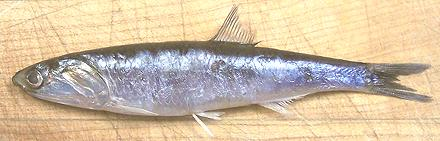

California Anchovy

[Engraulis mordax]
This anchovy is found from the Canadian border to the tip of Baja
California. They can grow to 9-3/4 inches and weigh 2.4 ounces, but the photo
specimen was 5-3/4 inches and weighed 0.7 ounce. Longer and a bit chunkier
than most anchovies, the California anchovy is used mostly for fishmeal and
tuna bait, but is also sold fresh here in California, and is just
occasionally canned.
More on Anchovies.
Buying:
These anchovies are often found sold on ice in
fish markets serving a Southeast Asian, particularly Filipino, community.
They may also be available frozen.
Cooking:
Fresh Anchovies are generally eaten fried as an
appetizer, head and tail on, head off, or filleted.
Filleting:
These fish are very easy to fillet but a bit
tedious to get to the filleting point. for 5-1/2 inch fish, 2.9
ounces yielded 1.5 ounces of fillet (52%). For efficiency do each step on
all the fish before going on to the next step.
- Scale the fish using a delicate scraping instrument such as the back
edge of your filleting knife. If some skin scrapes off don't worry about
it.
- With kitchen shears cut off the tail, then cut off the head diagonally
just behind the collar. Pull the head off with the pectoral fins just
behind it, taking the innards with it.
- With your filleting knife slit the belly back to the pelvic fins.
- Pinch off the pelvic fins and pull out the anal fin. With this
delicate a fish you shouldn't need to make any cuts to do this. Check the
body cavity and rinse out any remaining innards or membranes.
- Set the fish on its back and, starting near the tail end, flatten it
out, leaving the backbone standing between the sides. Grasp the backbone
near the tail end and pull it out of the fish. Do not worry about the
hair-like ribs, they'll disappear with cooking or processing.
- Fold the halves back together, and holding the fish from the sides,
pull out the dorsal fin.
sf_anchocaz* 060821 - www.clovegarden.com
©Andrew Grygus - agryg@clovegaden.com - Photos on this
page not otherwise credited are © cg1 -
Linking to and non-commercial use of this page permitted